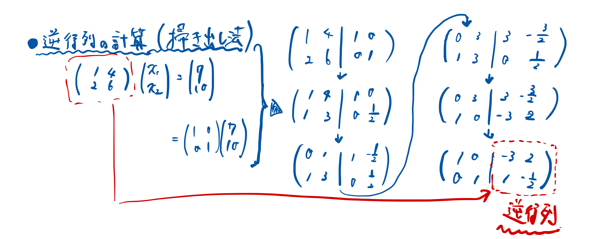
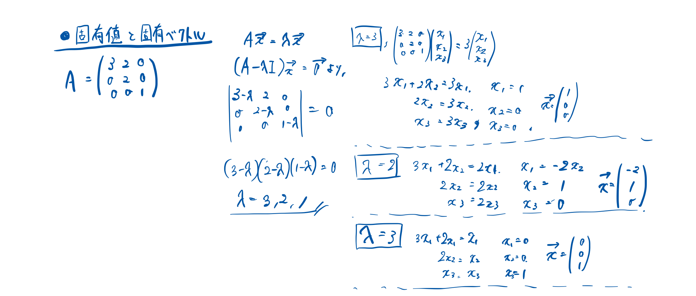
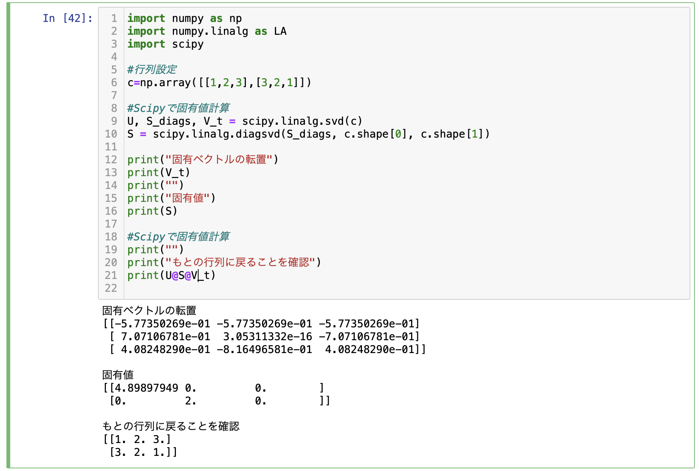

応用数学の学習記録
Ⅰ.線形代数
0)導入
方向や大きさを分けて表すにはベクトル表記が必要。
方向を加味して計算すると連立方程式を解く必要があり複雑であり、表記もしづらい。
ベクトルを並べて連立方程式を簡単に溶けるようにしたものが行列。
行列式とはベクトル作る面積に相当する。
行列式が値を持つかは逆行列の有無で判定する。
（ベクトルの方向が一緒では面積ができない→逆行列ができない
逆行列の求め方は掃き出し法（掛けて引いてを繰り返す）。
計算方法）

（行列の記述が難しそうだったので手書きで行うことにしました....）
行列式は、サラスの方法（たすき掛け）により解くことができる。
3x3以上であれば余因子展開により分解して記述することでサラスの方式で解ける。
1)固有値・固有ベクトルについて
固有値/固有ベクトルとは、ある行列（A)に固有ベクトル(x)をかけることで、固有ベクトルのスカラー倍にで表せるベクトルのこと。
スカラー倍の倍率が固有値（λ）に相当する。
計算過程）

2)固有値分解
固有値分解とは、固有値を複数持つ対角行列Λと、それに対応する固有ベクトルを並べた行列Vを用いて、
A=VΛV^-1のような3つの行列の積に変換すること。
メリットは、行列の累乗が簡単になることである。
3)特異値・特異ベクトルの概要について
固有値分解は正方行列のみ適用できる。
正方行列以外はどうするのか？
→似たことはできる！
4)特異値分解の概要
計算が複雑だったのでNumpyを使って実践)

手でやるよりも簡単ですね(^^)
>
Ⅱ.確率・統計
1)条件付き確率とは
すでに起きている事象Xを前提とした場合の、ある事象Yの発生確率
考え方は、事象XとYが同時に起こる確率/事象Xが起こる確率
2)ベイズ則の概要
すでに起きている事象Xを前提とした場合の、ある事象Yの発生確率は、
すでに起きている事象Yを前提とした場合の、ある事象Xの発生確率と等しい
3)期待値・分散の求め方
期待値＝Σ(確率*事象) (連続値の場合は積分)
分散=ばらつきの指標、期待値と事象の二乗和誤差。単位が事象の二乗
共分散=傾向の類似性
相関係数＝√分散。単位が事象と同じ
4)様々な確率分布
ベルヌーイ分布：表裏の2値の分布を表す
マルチヌーイ（カテゴリカル）分布：サイコロなどの多値の分布
二項分布：ベルヌーイ分布の多試行版
ガウス分布：標準偏差などばらつき範囲を考えるときに使う
Ⅲ.情報理論
1)自己情報量・シャノンエントロピーの定義
自己情報量とは、増加の比率を加味して考えるために設定される値
I(x) = -log(P(x)) *確率分布ではマイナスができる..
= log(W(x)) *逆数を取ることで解消
シャンノンエントロピーとは、自己情報量の期待値
H(x) = 期待値*I(x)= -Σ1P(x)log(P(x))
2)KLダイバージェンス・交差エントロピーの概要
カルバックライブラーダイバージェンスとは：２つの確率密度分布の類似性を示すこと
交差エントロピーとは、KLダイバージェンスの一部で、トレーニングにより最小化したい項